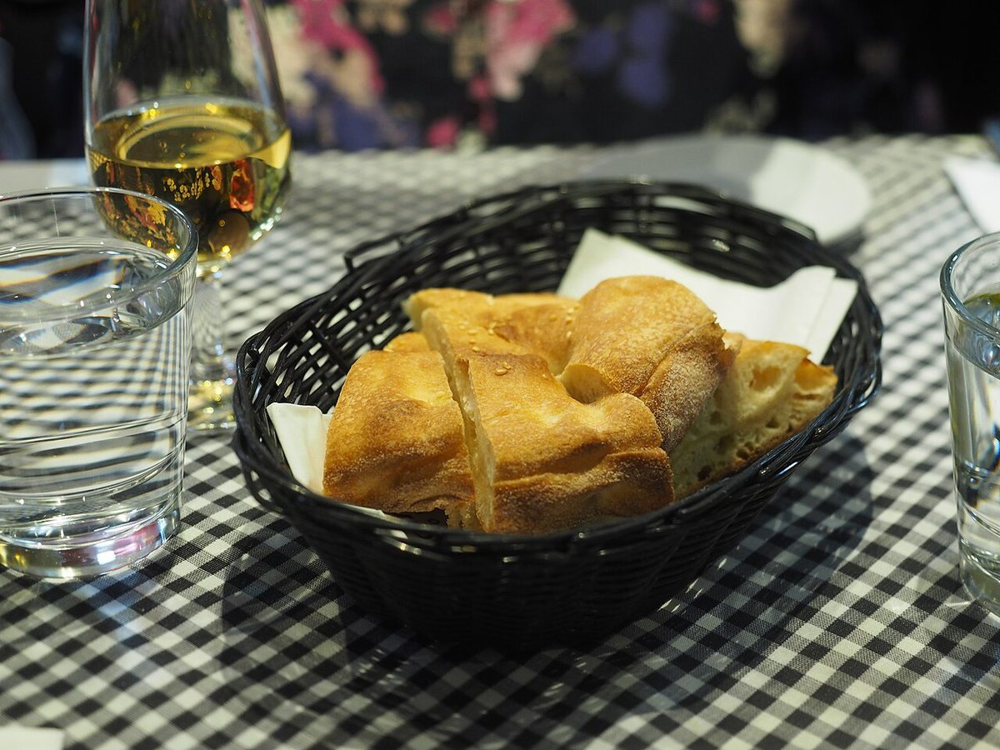

確認できていること
- 店名は「Pandelica」、副題は「日常の食事になるパン」、業種はパン屋
- 所在地は和歌山県和歌山市土入291-95
- 電話番号はなし。連絡はInstagramから
- 営業時間・定休日・パンの種類・価格・ご予約・駐車場は準備中
B / お店のこと
確認できているのは、所在地とInstagramのアカウントだけです。
「想像してみる」の部分は、制作側が想像して書いたものです。お店の実際の様子・考え・商品とは関係ありません。


屋号「Pandelica」の由来は分かりません。制作側は、響きから「パン」と、デリ(惣菜)のような語感を連想しました。ただの連想で、断定ではありません。副題の「日常の食事になるパン」からは、仕切りのあるトレイに主役も脇役も並ぶ食卓を連想し、このページを「仕切り皿」の作りにしました。制作側の連想で、お店の理念・由来とは無関係です。
副題の「日常」から、特別な日のごちそうではなく、毎日の食卓に自然にのるパンを想像しました。実際の商品やこだわりは、お店のご提供情報に差し替えます。